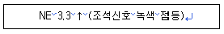

항로표지기능사 (2015-07-19 기출문제)
1과목: 항로표지 전원관리
1. 납축전지의 용량 단위는?
- [Ch]
- [Bh]
- [Ah]
- [Dh]/
(정답률: 95%)

2. 퓨즈의 사용 목적으로 거리가 먼 것은?
- 적절한 부하전류를 흐르게 한다.
- 과전류로부터 전기기기를 보호한다.
- 과전류가 흐를 때 전로를 차단한다.
- 전기기기의 정격용량을 증가시킨다.
(정답률: 82%)
3. 두 전하 사이에 작용하는 전기력은 전하의 크기에 비례하고 두 전하 사이의 거리의 제곱에 반비례 한다는 법칙은?
- 옴의법칙
- 스테판볼츠의 법칙
- 쿨롱의 법칙
- 나이키스트 법칙
(정답률: 77%)
4. 이종 이상의 원소의 화합물에 의한 반도체를 접합하만든 박막형 태양전지는?
- 습식 태양전지
- 결정실 실리콘 태양전지
- 화합물 반도체 태양전지
- 유기물 반도체 태양전지
(정답률: 93%)
5. 플레밍의 왼손법칙에서 검지손가락이 뜻하는 것은?
- 힘의 방향
- 자기장의 방향
- 전압의 방향
- 전류의 방향
(정답률: 95%)
6. 태양전지를 부하용도에 맞게 직·병렬로 구성한 태양전지 판넬의 집합체로 직류전력을 생산하여 전력조절기에 공급하는 장치는?
- 어레이
- 다이오드
- 분전반
- 정류기
(정답률: 79%)
7. 교류전력에서 직류전력을 얻기 위해 주로 사용되는 장치는?
- 정류기
- 교류발전기
- 축전지
- 교류분전반
(정답률: 87%)
8. 피뢰기의 주요 구성요소는?
- 특정요소와 직렬 갭
- 콘덴서
- 소호 리액터
- 특정요소와 리액터
(정답률: 82%)
9. 어떤 저항체에 12[V]의 전압을 걸었을 때, 6[A]의 전류가 흐른다면 이 저항체의 저항(Ω)은?
- 1
- 2
- 4
- 6
(정답률: 100%)
10. 발전기의 원동기 속도를 조정하는 장치는?
- 정류기
- 조속기
- ABC
- NFB
(정답률: 84%)
11. 열 용량 단위는?
- Ω/m
- ℃/W
- Ω·m
- J/℃
(정답률: 82%)
12. 전지의 국부작용을 방지하는 방법은?
- 완전 밀폐
- 감극제 사용
- 니켈 도금
- 수은 도금
(정답률: 72%)
13. 2Wh는 몇 J 인가?
- 360
- 3600
- 7200
- 10000
(정답률: 87%)
14. 직류 전력을 교류전력으로 변환하는 장치는?
- 인버터
- 저항기
- 정류기
- 초퍼장치
(정답률: 92%)
15. 3상 유도전동기 플러깅(pulgging)이란?
- 플러그를 사용하여 전원에 연결하는 방법
- 운전 중 2선의 접속을 바꾸어 상회전을 반대로 제동하는 법
- 단상 상태로 기동할 때 일어나느 현상
- 고정자와 회전자의 상수가 일치하지 않을 때 일어나는 현상
(정답률: 80%)
16. 발전기의 구성요소 중 기자력을 형성하는 부분은?
- 전지가 권선
- 계자 권선
- 정류자
- 슬립링
(정답률: 82%)
17. 2A 전류가 3분간 흐른 전하량(C)은?
- 200
- 360
- 500
- 600
(정답률: 94%)
18. 납축전기의 양극과 음극에 사용되는 것은?
- 양극(PbO2), 음극(PbO)
- 양극(Pb), 음극PbO2)
- 양극(PbO2), 음극(Zn)
- 양극(PbO2), 음극(Pb)
(정답률: 81%)
19. 변압기유로 사용되는 절연유의 특성에 대한 설명으로 거리가 먼 것은?
- 비열이 커서 냉각효과가 클 것
- 전연물과 산화 작용이 없을 것
- 점도가 클 것
- 인하점이 높을 것
(정답률: 79%)
20. 태양전지에 사용되는 효과는?
- 핀치 효과
- 펠티어 효과
- 도플러 효과
- 광기전력 효과
(정답률: 84%)
2과목: 고정 및 부표항로표지
21. 레이콘의 주요 구성부로 잘못된 것은?
- 발전기
- 수신기
- 송신기
- 송수신용 안테나
(정답률: 86%)
22. 유인등대 건출물의 도장 방법에 대한 설명으로 틀린 것은?
- 도장 전에 염분이나 이물질을 제거하여야 한다.
- 하도와 상부는 동질의 제품을 사용하는 것이 좋다.
- 기온 5도이하거나 습도가 80%이상이면 도장을 피한다.
- 도료는 얇게 여러 번 칠하는 경우보다 한꺼번에 두껍게 칠하는 것이 좋다.
(정답률: 86%)
23. 무인등대의 정비점검주기로 맞는 것은?
- 1개월에 1회 이상
- 2개월에 1회 이상
- 3개월에 1회 이상
- 6개월에 1회 이상
(정답률: 88%)
24. 선박에 육상의 특정한 위치를 표시하여 주기위하여 설치하는 탑과 같이 생긴 구조물로거 야간표지의 대표적인 것은?
- 등대
- 등주
- 등부표
- 등표
(정답률: 89%)
25. 다음 중 주간표지에 속하지 않는 것은?
- 입표
- 부표
- 도표
- 등선
(정답률: 87%)
26. 등명기의 렌즈가 갖추어야 할 조건으로 맞는 것은?
- 렌즈의 최소 두께는 6mm 이상이어야 한다.
- 렌즈의 색한은 백색뿐이다.
- 적외선에 의하여 렌즈가 60도 간격으로 광학적 굴절에 지장을 주지 않아야 한다.
- 광망은 좌, 우로만 일정하게 보여야 한다.
(정답률: 71%)
27. 레이더 비콘(Radar beacon)의 사용 목적이 아닌 것은?
- 원거리에 있는 물표탐지의 개선
- 눈에 잘 띄지 않는 해안선에 있는 위치의 식별
- 거리측정은 되나 특징이 없는 해안선에 있는 위치의 식별
- 육지초인(표지)의 식별
(정답률: 65%)
28. 등대기상 관측 중 한 점의 구름도 없을 때의 부호는 "0"이다. 안개, 비, 눈으로 하늘이 가려 운량 측정이 불가할 때의 부호로 가장 알맞은 것은?
- 5
- 7
- 8
- 9
(정답률: 75%)
29. 항로표지용 조명기구로서 등명기에 대한 설명으로 틀린 것은?
- 가스 또는 전구를 사용한 광원에서 나온 빛을 렌즈 또는 반사경을 이용하여 굴절 반사시켜 빛을 모아 외부로 방사하는 조명기구이다.
- 등대, 등표, 등부표, 교량표지 등에 사용한다.
- Lantern, Light 및 Beacon 등으로 표기한다.
- 부동렌즈를 이용하는 점멸식 등명기를 Rotating Beacon이라 한다.
(정답률: 72%)
30. 등부표의 종류에서 LS-4000dm의 표준설치 장소로서 맞는 것은?
- 조류 7.5 노트 이하 외해 (급조류)
- 조류 2 노트 이하 간만차가 심한 곳
- 조류 3.8 노트 이하 잔잔한 해면
- 조류 5.5 노트 이하 외해
(정답률: 64%)
31. 육지초인등대의 도장색으로 맞는 것은?
- 백색
- 홍색
- 녹색
- 황색
(정답률: 92%)
32. Phoo cell, daylight controls, sun switch 등으로 표기되며, 주간에 햇빛을 감지하여 광원의 전원공급을 차단하는 제어장치는?
- 섬광기
- 전구교환기
- 일광제어기
- 조류방지봉
(정답률: 76%)
33. 우리나라는 IALA 해상부표식 중 어떤 방식을 채택하고 있는가?
- A 방식
- B 방식
- C 방식
- D 방식
(정답률: 79%)
34. 우현 방파제 등대의 도장색과 등색은?
- 백색도장에 녹등
- 백색도장에 백등
- 홍색도장에 홍등
- 홍색도장에 백등
(정답률: 77%)
35. 등부표의 기능은 변경이 빈번하게 일어날 수 있기 때문에 정비점검계획에 의거하여 순항시 정확한 점검을 하여야 한다. 등부표의 주요 점검 사항으로 거리가 먼 것은?
- 위치
- 등질
- 소등과 침수여부
- 수심
(정답률: 86%)
36. 다음 중 연안표지 등탑의 도장 색은?
- 백색
- 홍색
- 녹색
- 황색
(정답률: 89%)
37. 다음 중 랜비를 구성하는 주요 부속 장비가 아닌 것은?
- 발전기
- 조류신호처리기
- 레이콘
- 무신호기
(정답률: 72%)
38. 유인등대 창호의 관리요령으로 틀린 것은?
- 건물의 창호는 강제보다 무겁고, 부식에 강한 재료를 사용한다.
- 강제창호는 녹을 방지하기 위하여 도장을 한다.
- 창호를 점검할 때에는 코킹의 부착 상태와 콘크 리트 균열 등에 대하여 조사하고 수선한다.
- 창호의 고장 및 전기 사고 방지를 위하여 창 또 는 출입구에는 전기, 전화 등의 인입 선로를 통과 시키지 않아야 한다.
(정답률: 68%)
39. 다음 중 해상용 등명기의 구성요소가 아닌 것은?
- 렌즈
- 색필터
- 조류센서
- 전구교환기
(정답률: 89%)
40. 선박용 레이더 전파에 의하여 작동되었을 때 작동하고 있는 레이더의 표시기 상에 특별 신호가 자동으로 되돌아가 나타나는 송신 장치는?
- 레이더비콘
- 라디오비콘
- 리플렉터
- 방향탐지기
(정답률: 86%)
3과목: 항로표지시스템의 운영
41. Loran-C에서 GRI는?
- 군반복주기
- 송신국
- 수신주파수
- 송신주파수
(정답률: 79%)
42. 무인등대의 태양광 발전시스템의 설치 장소 선정에 대한 설명으로 옳은 것은?
- 태양전지 설치장소는 축전지에서 멀수록 좋다.
- 어레이의 설치방향은 북동방향으로 향하는 것이 원칙이다.
- 태양전지의 설치장소가25도의 경사면이면 30도의 경사로 사용하는 것이 좋다.
- 어레이의 조정방향은 동쪽보다 서쪽으로 향하는 것이 최대 일사량을 얻을 수 있다.
(정답률: 68%)
43. 선박기상통보 운용 장치의 기능으로 거리가 먼 것은?
- 기상데이터 자동수집 기능
- 기상데이터 수동입력 기능
- 비상방송기능
- 기상데이터 음성처리 기능
(정답률: 76%)
44. 전파잡음의 분류에서 자연잡음에 해당하지 않는 것은?
- 우주잡음
- 태양잡음
- 인공잡음
- 은하잡음
(정답률: 88%)
45. Loran-C에서 정확한 위치를 얻기 위한 로란국 선택시 고려 사항이 아닌 것은?
- 전리층을 이용할 수 있는 국을 선택할 것
- 위치선이 직교하는 국을 선택할 것
- 너무 멀리 있는 국은 피할 것
- 기선의 연장선에 있는 국은 피할 것
(정답률: 54%)
46. 등표의 설계에 적용하는 설계파고의 크기는 ‘현장심해유의파고’의 몇 배인가?
- 1
- 1.5
- 2
- 3
(정답률: 71%)
47. 항로표지의 도식은 ‘FJ(2) W 5s 57m (16)M Racon’이다. 이 도식을 통하여 알 수 있는 내용으로 옳지 않은 것은?
- 등고는 57미터이다.
- 광달거리는 16마일이다.
- 1주기 당 섬광 2회이다.
- 무중신호표지가 설치되어 있다.
(정답률: 87%)
48. 조류신호소의 주요 구성장비가 아닌 것은?
- 조류측정 시스템
- 조류감지시스템
- 조류신호처리시스템
- 조류신호표지시스템
(정답률: 52%)
49. Loran-C의 반송파 주파수로 옳은 것은?
- 100[kHz]
- 325[kHz]
- 200[kHz]
- 325[MHz]
(정답률: 73%)
50. Loran-C시스템에서 주국의 주요기능으로 거리가 먼 것은?
- 규정된 허용 범위 내에서 적합한 포맷에 의하여 신호 송신
- 적당한 복사시간 지연량 유지
- 해당 체인의 기준시간, 신호 반복율 및 반송파주파수 설정
- 통제국의 지시에 의하여 블링크(Blink)
(정답률: 76%)
51. DGPS 측위기법으로 적합하지 않은 것은?
- DGPS 측위기법
- 실시간 이동 측위기법
- 후처리 상대 측위기법
- 전처리 상대 측위기법
(정답률: 78%)
52. Loran-C 전파는 여러 경로를 경유하여 원거리에 수신점까지 도달되는데 이들 경로 중 안정성이 좋고 고정밀 항해에 적합한 전파는?
- 공간파
- 대지반사파
- 대류권파
- 지표파
(정답률: 65%)
53. NE 3.3 ↑ (조석신호 녹색 점등)53. 조류신호표시 전광판에 보기과 같이 점등 되었을 경우 설명으로 옳은 것은?

- 현재 밀물 상태임
- 풍속이 3.3 노트 증가
- 항로통과예정
- 영상계 데이터
(정답률: 66%)
54. DGPS 보정정보 전달체계인 RTCM SC-104메시지 포맷번호 16은 무엇을 방송하는가?
- 특별메시지
- 기준국 파라메터
- 궤도상 위성상태
- 의사거리 보정치
(정답률: 81%)
55. 높은 주파수의 전파를 발사시켜 해면 반사파를 이용 표층의 유향·유속을 측정하는 방식은?
- 레이더 방식
- 전자유도방식
- 후처리 상대 측위기법
- 의사거리 보정치
(정답률: 78%)
56. 조류신호 시스템의 구성요소로 거리가 먼 것은?
- 센서부
- 정보처리방식
- 전송시스템
- 조명시스템
(정답률: 67%)
57. 해상용 DGPS(DGNSS)에 사용하는 중파 방송시스템의 주파수는?
- 283.5kHz ~ 310kHz
- 2835kHz ~ 3100kHz
- 283.5MHz ~ 310MHz
- 2835MHz ~ 3100MHz
(정답률: 73%)
58. Loran-C체인의 통제 방법 중 감시국에서 수신된 자료를 근거로 체인 통제소에 기선을 통제하는 방법은?
- Alpha 통제
- Bravo 통제
- Charlie 통제
- Delta 통제
(정답률: 35%)
59. 조류신호소이 조류 값 측정지점으로 적당하지 않는 것은?
- 수면하 1m
- 수면하 3m
- 수면하 7m
- 수면하 15m
(정답률: 63%)
60. 항로표지 시설을 동기 점멸화하는 주요 목적으로 적합한 것은?
- 시인효과 증대
- 소모전력 절감
- 예산 절약
- 항해자 눈부심 방지
(정답률: 89%)